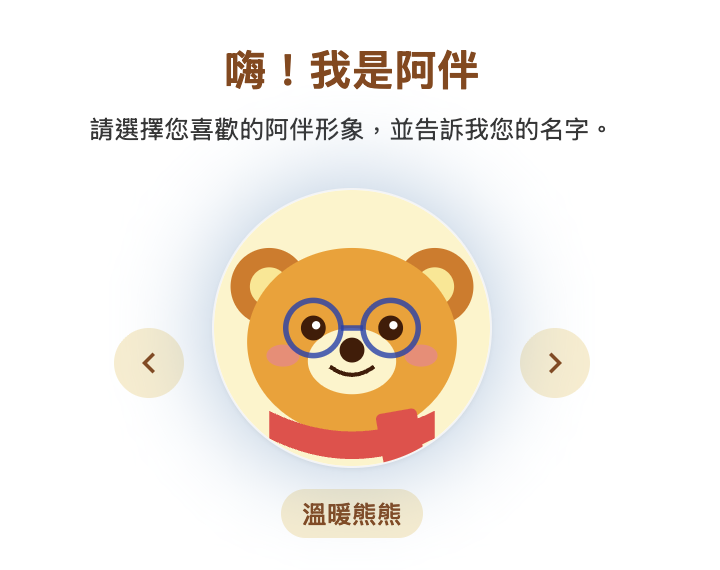

阿伴 App — 異鄉人的城市足跡助理
情緒導航 × 在地連結 × AI 陪伴
核心價值理念
「導航不應只是縮短路徑的工具，而是連結人與城市的溫度。我們將地理數據轉化為歸屬感，讓每個獨自移動的瞬間，都能感受到被理解的陪伴。」
設計邏輯架構
問題定義
孤獨感的風險：異鄉人在陌生城市深夜移動時，面對不熟悉的環境與社交斷層的心理安全感缺失。
設計決策
從「單一功能資訊」轉向「資訊情緒整合」。開發情緒標記與地圖足跡，第二版引入「心情按鈕」區隔資訊需求與情感需求。
技術權衡
面對 80% 的語音延遲負評，將語音縮限於情感支持，增加 Loading 動畫與登入指引以優化等待體驗。
量化研究數據
核心功能設計價值

感恩日記 App — 正向心理學介入工具
幸福感養成 × 行為誘因設計 × LLM 應用
核心價值理念
「設計的本質在於賦能。我們透過數位介入降低正向心理學的實踐門檻，將『寫日記』從一種壓力轉化為一種自我療癒的反射習慣。」
設計邏輯架構
問題定義
用戶了解感恩好處卻難以養成習慣。核心障礙在於忙碌與「空白焦慮」——不知道要寫什麼。
設計決策
引入 Chatbot 引導式寫作，透過「為什麼」結構化提問降低紀錄門檻，並輔以連續簽到成就機制強化誘因。
設計價值
將心理學介入手段數位化，每個功能節點皆對應一個行為改變障礙（提醒、選色、對話）。
核心功能設計價值

企業 EAP 提案 — 心理安全感數位轉型
職場韌性 × 降低人才流失 × 去污名化設計
核心價值理念
「打造一個『允許壓力被看見且可討論』的職場文化。我們透過隱私與去標籤化設計，重新定義員工協助方案，將心理健康從福利轉化為組織的韌性資產。」
設計邏輯架構
問題定義
離職率自 12% 飆升至 21%，傳統 EAP 使用率不足 5%，主因為職場對「壓力」的污名化。
設計決策
將「被動諮詢」轉化為「主動融入」。透過線上預約系統確保匿名性，降低在辦公室被發現的焦慮感。
策略指標
預期提升使用率至 15% 以上。整合知識庫與匿名社群按鈕，打造「壓力可談論」的職場文化。
核心功能設計價值